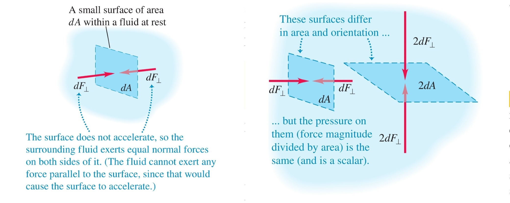

-
Флуид - вещество, което може да тече и да променя формата си
а) течност - флуид, който може да променя формата на обема си, но не и самия обем
- некомпресируемост - налягането върху течността има незначителен ефект върху нейния обем
б) газ - флуид, който може да променя и формата, и самия обем
в) идеален флуид - некомпресируем флуид без вискозитет (вътрешно триене)
-
Плътност () - масата, съдържаща се в единица обем
а) свойства
- неща, направени от един и същ материал, имат една и съща плътност
-
Налягане () - перпендикулярната сила, която флуидът упражнява върху дадена повърхност
а) мерни единици
б) налягане на флуид - самият флуид упражнява налягане върху всеки свой безкрайно малък сегмент

в) закон на Паскал - налягане, което се упражнява върху флуид в затворен съд, се предава до всяка точка на флуидаи стените на съда
г) зависимост от дълбочината
- - налягането на дълбочина
- - налягането над повърхността на флуида
- - плътността на флуида